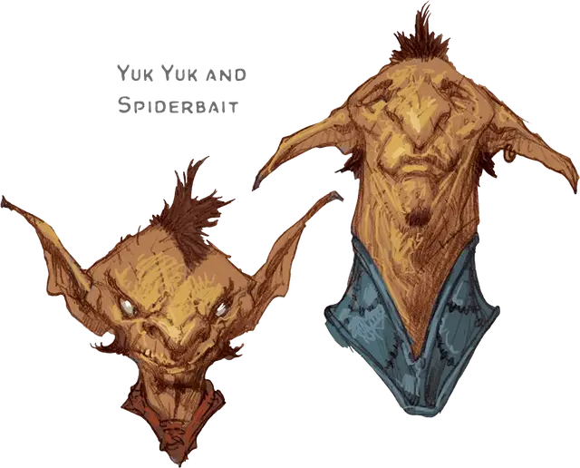

Спайдербэйт
Spiderbait
Маленький Гуманоид (Гоблиноид), нейтральный, именной НИП

Класс Доспеха 15 (кожаный доспех, щит)
Хиты 7 (2к6)
Скорость 30 футов
| мод | спас | ||
|---|---|---|---|
| СИЛ | 8 | −1 | −1 |
| ЛОВ | 14 | +2 | +2 |
| ТЕЛ | 10 | +0 | +0 |
| мод | спас | ||
|---|---|---|---|
| ИНТ | 10 | +0 | +0 |
| МДР | 8 | −1 | −1 |
| ХАР | 8 | −1 | −1 |
Навыки Акробатика +6, Атлетика +3, Скрытность +6
Чувства тёмное зрение 60 футов, пассивное Восприятие 9
Языки Общий, Гоблинский
Опасность 1/4 (50 опыта)
Бонус мастерства +2
Особенности
Ловкий побег. Гоблин может в каждом своем ходу бонусным действием совершать действие Засада или Отход.
Бдительный. Спайдербэйт имеет преимущество на проверки, совершаемые для того, чтобы не быть застанным врасплох.
Действия
Скимитар. Рукопашная атака оружием: +4 к попаданию, досягаемость 5 футов, одна цель. Попадание: Рубящий урон 5 (1к6 + 2).
Короткий лук. Дальнобойная атака оружием: +4 к попаданию, дистанция 80 футов/320 футов, одна цель. Попадание: Колющий урон 5 (1к6 + 2).
Описание
Гоблины — это маленькие, эгоистичные существа с чёрными сердцами, живущие в пещерах, брошенных рудниках, разграбленных подземельях и прочих неприглядных местах. Слабые по отдельности, гоблины собираются в большие — зачастую несметные — группы. Они жадны до власти и часто злоупотребляют теми полномочиями, которые у них уже есть.